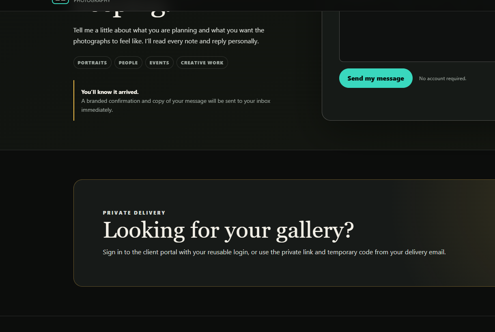

COMPLETE REMOVABLE-MEDIA IMAGING WORKSPACE
Flash, verify, back up, and format with confidence.
A native Windows and Linux imaging application for Mobile Base, Raspberry Pi, and removable-media projects. It handles common compressed images, identifies safe targets, proves every write, and can turn a complete card back into a reusable image.
v0.3.1Windows + Linux x64Open source

FLASH / VERIFY / BACKUP / FORMATApplication preview is generated during the release build.
ONE APPLICATION, FOUR WORKFLOWS
A full image workshop for field systems.
Flash and prove
Download Mobile Base Stable or choose a local .img, .img.zst, .img.gz, .img.xz, or single-image .zip. Full readback is enabled by default.
Verify or back up
Compare an existing card with its source image without changing it, or read every byte into a raw or Zstandard-compressed backup with a checksum sidecar.
Format and manage
Prepare cards as exFAT, FAT32, or NTFS, calculate SHA-256 files, resume downloads, manage prepared-image cache, and save operation history.
DESTRUCTIVE-OPERATION SAFETY
Designed to make the target unmistakable.
The imager never offers an internal disk. Windows and Linux boot/system media are excluded at inventory. Every flash or format requires elevation, full device details, a warning, and typing the exact device confirmation.
- USB/SD removable-media allowlist
- Boot and system disks blocked
- Official checksum enforcement
- Exact typed erase confirmation
- Read-only backup and verify modes
- Full post-write verification by default
READY TO IMAGE
Download Mobile Base Imager
Loading verified release metadata...
Verify the published SHA-256 for the unsigned Windows and Linux downloads.